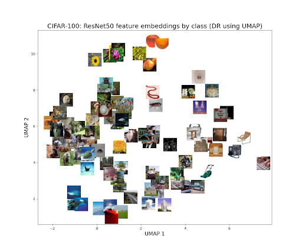
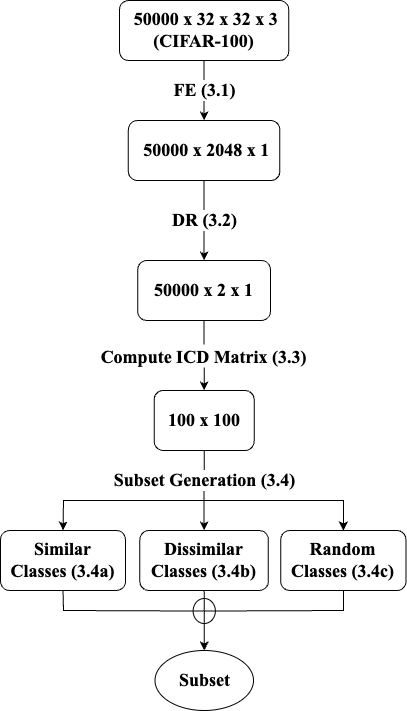
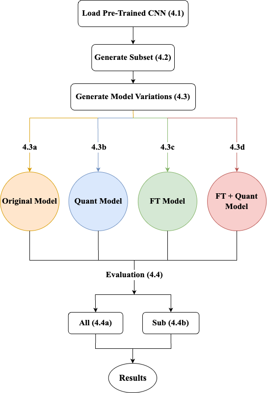

When Less is More: Surprising Gains from Label-Aware Quantization
Ari Juljulian
Jessica Hung
Saathvik Dirisala
Yijun Luo
Dr. Alex Cloninger
Dr. Rayan Saab
Halıcıoğlu Data Science Institute, UC San Diego
Introduction
What is Label-Aware Quantization (LAQ)?
Post-training quantization (PTQ) techniques typically use data from the same distribution as the training data
to achieve high performance under memory constraints. LAQ, on the other hand, leverages data from different
distributions.
Why LAQ?
Many machine learning tasks involve only subsets of much larger datasets.
LAQ can reduce the model size in memory.
LAQ might perform better than the original model on subsets.
Greedy Path-Following Quantization (GPFQ):
Computationally efficient quantization method for pre-trained models (MLPs and CNNs).
Quantizes each neuron using a greedy path-following algorithm, eliminating the need for complex retraining.
Research Question: Does LAQ boost CNN performance on subset classification tasks?
Dataset
CIFAR-100
Number of Classes: 100
Image Size: 32 x 32 x 3
Train Set: 50,000 images (500 per class)
Test Set: 10,000 images (100 per class)

Figure 1: Visualizing Class Centers
Methods
Subset Generation (From Section 3):
Feature Extraction (FE): Flattened output of convolutional layers from a pre-trained ResNet-50 (2048 dimensions).
Inter-Class Distance (ICD): KL divergence (Gaussian closed-form) for every unique pair of classes.
Subset Selection: Selecting 10 classes greedily based on inter-class similarity for spread along the x-axis:
Similar Classes: Low Median Distance
Dissimilar Classes: High Median Distance
Random Classes: Intermediate Median Distance

Figure 2: Data Preprocessing & Generation
Model Variations (From Section 4):
Original: Uses pre-trained weights.
Quant: Quantized using the training split of the subset.
Fine-Tuned (FT): Fine-tuned using the training split of the subset.
FT + Quant: Fine-tuned first, then quantized.

Figure 3: Experimental Setup
Results
Evaluation Method:All
Conclusion
Our results indicate that Label-Aware Quantization can lead to unexpected accuracy improvements, opening up new avenues for research in efficient deep learning.